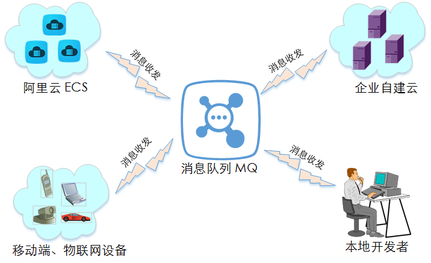
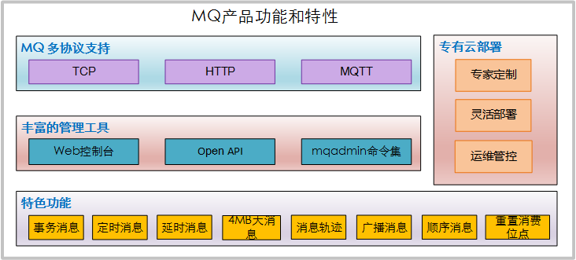
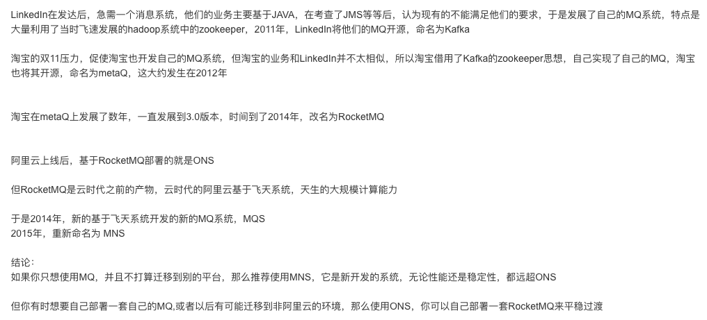

Agenda
- ONS功能简介
- 初探Consumer消息接收的实现
- 在麦淘系统中的封装设计
概述

产品功能

与MNS对比

在麦淘系统中的封装设计
- 1. https://help.aliyun.com/document_detail/34411.html
- 2. https://yq.aliyun.com/articles/66128
- 3. http://docs-aliyun.cn-hangzhou.oss.aliyun-inc.com/pdf/ons-user-guide-cn-zh-2016-08-11.pdf